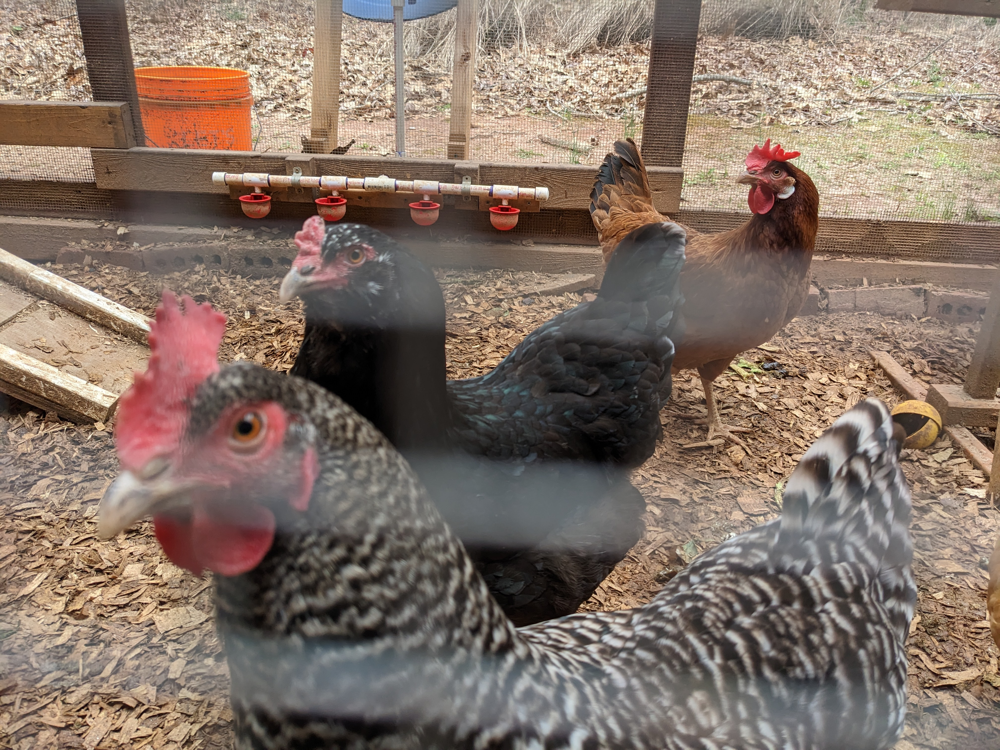
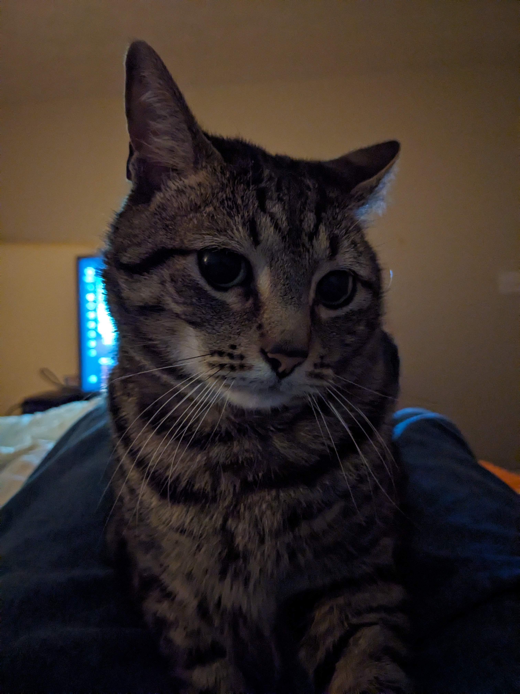
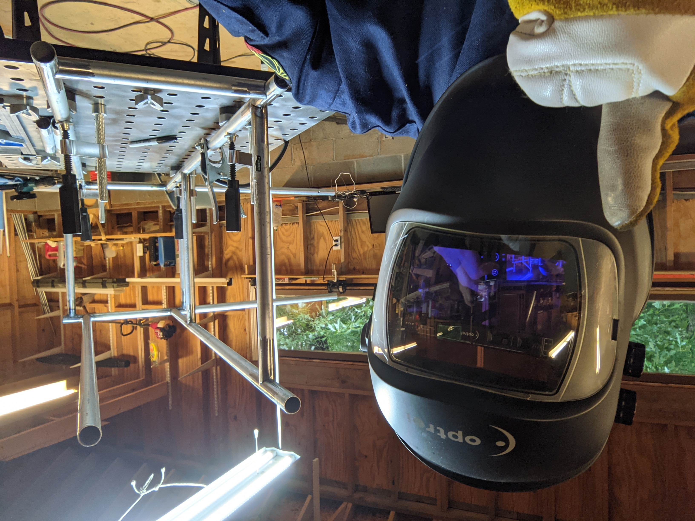

{% extends "navbar.html" %} {% block content %}   
About myself
Things I like to do:
Microcontroller programming.
Computer programming.
Messing with electronics.
Writing shell scripts.
Welding, TIG, MIG, SMAW processes.
3D Printing useful objects.
CAD designing useful objects to print out.
Raising chickens, mostly to eat their eggs.
Smoke meats with smoker. Pork butt or beef brisket are delicious but usually turkey because it's better for you.
Troubleshooting computers.
Troubleshooting computer networks.
Learn new and useful things to do with computers.
Things I have done for work:
Audiovisual controls system automation programming.
Layer 3 switch configuration.
Write shell scripts (Bash, PowerShell, and Windows Command Processor).
Diagnosing and repairing LAN networking issues (OSI layers 1,2,3).
Mantaining, diagnosing, and troubleshooting user level computer hardware and software.
Endpoint OS and application software deployment.
Volunteer for special projects because day-to-day work is typically boring.
Repair and mantain Motorola MC9000 and MC9100 laser scanners.
Repair and mantain Microplex SOLID F32 and F90HD contiunous feed laser printers.
Places I have worked:
Barco NV
Georgia Gwinnett College
ANConnect
Office Depot
Positions I have held:
Technical Services Engineer (Barco)
Technical Services Specialist (Barco)
Audio Visual Technician L2 (GGC)
Support Services Technician L3 (GGC)
Network Technician L2 (ANConnect)
Technology Sales Associate (Office Depot)
{% endblock %}